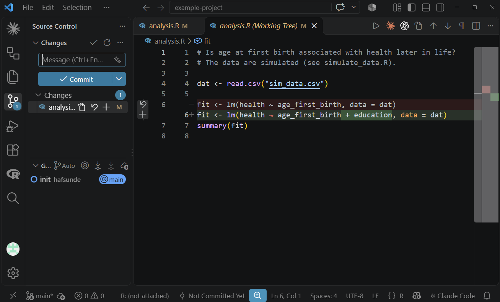

Git og GitHub for forskere
Versjonskontroll og kodedeling
CeFH Ung · 2nd Annual Young Researchers Workshop
18. november 2026
Hvorfor bry seg?
Spørsmål du ikke kan svare på i dag
- Hva har jeg endret siden jeg sendte inn?
- Hvilken versjon av koden lagde Figur 2?
- Hva var det egentlig AI-en endret nå?
- Hvilken versjon har medforfatteren min?
- Hvorfor virker ikke koden min lenger?
Kjenner du deg igjen?
analysis.R
analysis_final.R
analysis_final_v2.R
analysis_final_v2_coauthor_comments.R
analysis_final_REALLY.R
analysis_final_REALLY_old.RMed git
analysis.RÉn fil. Historikken lagres i bakgrunnen:
a3f9c12 Respond to reviewer 2 12 Nov
7b2e4d0 Add sensitivity analysis 3 Oct
e81c5f3 Submitted version 1 JunHva git gir deg
Spor endringer for en hel mappe
Historikk hver lagrede versjon, med en notis
GitHub backup, synkronisering og deling
Grunnbegreper
Ord du trenger
| Ord | Betyr |
|---|---|
| repository (repo) | prosjektmappen |
| commit | lagret øyeblikksbilde + notis |
| diff | hva som er endret |
| stage | (valgfritt) velg endringer til neste commit |
| push | send commits til GitHub |
| pull | hent commits fra GitHub |
| clone | last ned et repo første gang |
Repository
En prosjektmappe som git holder øye med.
- Analyse: skript og små filer (
.R,.do,.csv) - Skriving: artikler og presentasjoner (
.tex,.md,.qmd)
Tips: fortell git hva den skal ignorere med .gitignore
En tekstfil som heter .gitignore i prosjektmappen, lister opp filer git aldri skal spore,
for eksempel data, store resultatfiler og midlertidige filer. Ett mønster per linje:
*.rds *.dta temp_* data/ .Rhistory
Hvor historikken ligger
my-project/
├── .git/ ← historikken
├── analysis.R
└── README.md- Lages én gang, når du begynner å bruke git i en mappe
- Skjult. Du trenger aldri å åpne den.
- Filene dine er den nåværende versjonen;
.githar alle de tidligere
Commit
Et lagret øyeblikksbilde, med en kort notis.
Én commit per endring som hører sammen:
- «Add sensitivity analysis» ✓
- Ikke én gang om dagen, ikke for hver linje
Diff
Hva som er endret mellom to versjoner.
# Henger alder ved første fødsel sammen med helse?- fit <- lm(health ~ age_first_birth, data = dat)+ fit <- lm(health ~ age_first_birth + education, data = dat) summary(fit)
− fjernet + lagt til
- Endringene dine siden forrige commit
- Eller mellom commits: det som kom inn da du pullet
Revert, og (valgfritt) stage
Gå gjennom diffen som med «Spor endringer» i Word.
Revert ✗ som Avvis endring: tilbake til forrige commit
Stage (valgfritt) commit bare noen av endringene nå, resten senere
Alt du ikke reverter, blir værende i filen.
Revert og stage: knappene
| VS Code | RStudio | |
|---|---|---|
| Fil | ↶ eller + ved siden av filen | More → Revert, eller kryss av Staged |
| Blokk | knappene ved blokken i diffen | Discard chunk / Stage chunk |
| Linjer | marker, høyreklikk → Revert / Stage Selected Ranges | marker → Discard / Stage selection |
| Commit | ingenting staget = commit alt | kryss av Staged (vanligvis alt) |
Syklusen
Sjekk diffen når noen andre har gjort endringer: en AI eller en medforfatter.
Laptopen din og GitHub
← pull
pull →
din andre datamaskin
- Git fungerer uten nett. GitHub er den delte kopien.
- Nyttig alene også: jobb-PC og hjemme-PC, samme prosjekt.
To måter å starte på
En mappe du allerede har initialiser den, lag en første commit, og publiser den på GitHub
Et nytt prosjekt opprett det på GitHub, og clone det
Hvor knappene er
| VS Code | RStudio | |
|---|---|---|
| Initialiser en mappe | Source Control → Initialize Repository | Tools → Version Control → Project Setup → Git |
| Første commit | Melding «First version» → Commit | Kryss av alle filer under Staged → Commit |
| Publiser | Publish Branch | usethis::use_github() |
| Nytt repo på GitHub | github.com: + → New repository, kryss av Add a README | |
| Clone det | Source Control → Clone Repository | New Project → Version Control → Git |
Demo 1: VS Code og RStudio
Dette skal jeg vise
- Gjøre en mappe om til et repo
- Endre et skript, se diffen, commit
- La en AI endre, se over det
- Se tilbake i historikken
- Så det samme i RStudio

Se over endringer fra AI
- Commit før AI-en begynner
- La den gjøre endringer
- Les diffen
- Revert det du ikke ba om, commit resten
Tips: AI-verktøy kan lese historikken til prosjektet
I et repo kan verktøy som Claude Code se hver commit og hver endring. Spør «hva er endret siden innsendt versjon?» eller «når endret dette resultatet seg, og hvorfor?». De kan også committe, pushe eller reverte for deg. Diffen må du fortsatt lese selv.Historikk


Samme knapper, ulike steder
| VS Code | RStudio | |
|---|---|---|
| Se endringer | Source Control (venstre kant) | Git-panelet (øverst til høyre) |
| Diff | klikk på filen | Diff |
| Commit | skriv melding, Commit | kryss av, Commit |
| Push og pull | Sync Changes | grønn / blå pil |
| Historikk | Graph / Timeline | klokkeikonet |

GitHub
Hvorfor GitHub
- Del koden din sammen med artikkelen
- Samarbeid med medforfattere
- Samme prosjekt på flere datamaskiner
- Backup utenfor laptopen
Samarbeid med andre
- Inviter medforfattere til repoet
- Pull før du begynner
- Push når du er ferdig
Har begge endret samme linje?
Git ber deg velge.
Gjøre koden offentlig
Alle kan clone og pulle. Bare du og medforfatterne du inviterer kan pushe.
Et offentlig repo viser hele historikken
Gamle versjoner, gamle kommentarer, filer du har slettet
Tips
Kopier den ferdige koden til et nytt repo, og gjør det offentlig
Demo 2: GitHub
Dette skal jeg vise
- Publisere mappen til denne workshopen på GitHub, som et offentlig repo
- Se på det på github.com: filer, commits, en diff
- Endre noe på github.com, slik en medforfatter ville gjort
- Pulle endringen tilbake til laptopen min
Din tur
Øvelse 1: sett opp git og clone workshopen
- Installer git
- Start RStudio / VS Code på nytt
- Fortell git hvem du er
- Clone workshop-repoet
Du trenger ikke GitHub-konto ennå. Jobb gjerne to og to.
1. Installer git
| Jobb-PC (Windows) | Firmaportal (Company Portal) → søk etter Git → Installer |
| Privat PC (Windows) | https://git-scm.com/downloads/win, klikk Next gjennom alt |
| Mac | Appen Terminal → skriv git --version → Install hvis du blir spurt |
2. Start editoren på nytt
| RStudio | Start på nytt. Sjekk Tools → Global Options → Git/SVN: «Git executable» viser en filsti |
| VS Code | Start på nytt. Git-støtte er innebygd |
Stata: bruk VS Code til git.
3. Fortell git hvem du er
Hver commit lagrer hvem som laget den: et navn og en e-postadresse. Git lar deg ikke committe før den vet det. GitHub bruker e-posten til å koble commits til kontoen din.
Bruk e-posten du bruker (eller skal bruke) på GitHub. Gjøres én gang per maskin.
4. Clone workshop-repoet
https://github.com/hafsunde/git-demo
VS Code
- File → Close Folder
- Source Control → Clone Repository
- Lim inn lenken, trykk Enter
- Velg en mappe → Open
RStudio
- File → New Project
- Version Control → Git
- Lim inn lenken
- Velg en mappe → Create Project
En vanlig mappe fungerer best, f.eks. Documents/GitHub. Åpne så participants/exercise-2-github.md.
Øvelse 2: ditt eget repo på GitHub
- GitHub-konto (om nødvendig), så et nytt repo på github.com, med README
- Clone det til laptopen din
- Endre README-filen, lagre
- Se på diffen, commit
- Push, oppdater github.com
Stegene: participants/exercise-2-github.md
Er det verdt det?
Hva du får
Oversikt hver endring og hver versjon, med en notis om hvorfor
AI du kan kontrollere commit først, les diffen; AI kan også lese historikken
Lett å dele én lenke til medforfattere, tidsskrifter eller alle
Tips
- Én commit per endring; skriv hvorfor
- Pull når du starter, push når du er ferdig
- Ren tekst fungerer best (
.R,.do,.tex,.md) - LaTeX/Markdown: én setning per linje
- Bruk heller en vanlig mappe enn OneDrive/Dropbox
En idé for TSD
(i git)
→
ekte data
→
manus (i git)
- Ha en kopi av TSD-skriptene i et lokalt repo
- Bare aggregerte resultater forlater TSD
- Git fungerer også på TSD, bare uten GitHub og AI